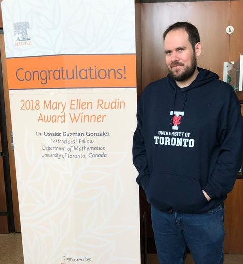

Osvaldo Guzmán

My name is Osvaldo Guzmán and I am a researcher at the
Centro de Ciencias Matemáticas (CCM), UNAM Campus Morelia.
My primary areas of research are set theory, set theoretic topology, infinite combinatorics, forcing, cardinal invariants of the continuum and forcing axioms.
Publications and preprints
Notes and other documents
Math Genealogy